Authors: Google Cloud AI Research, University of Illinois Urbana-Champaign · Google, MIT, UIUC
Published: 2026-10-25 · Category: cs.AI
Citation: arXiv:trending:oo harness object oriented agent harness evoluti · PDF · abstract page
OO-Harness Boosts Agent Success Rates by 28.4% via Modular Evolution
1. What It Is & Why It Matters
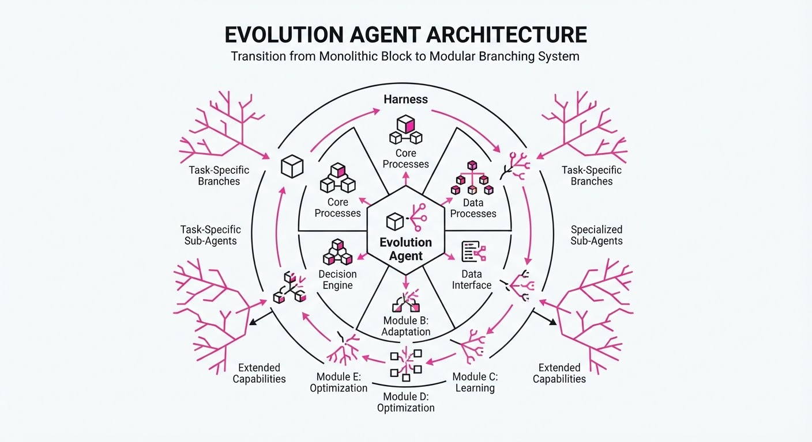
Standard agent frameworks often rely on a "monolithic harness"—a single, static set of instructions, system prompts, and tool definitions applied to every task. This creates a cognitive and operational bottleneck; an agent designed for broad web navigation is frequently clumsy when tasked with nuanced database management or complex API orchestration. OO-Harness moves away from this "one-size-fits-all" approach by treating the agent’s operating environment as a dynamic, evolving hierarchy of object-oriented classes.
- The Problem: Monolithic harnesses suffer from "instruction bloat" and context confusion. As you add more tools and rules to a single prompt, the model’s attention becomes diluted, increasing the probability of hallucinated tool calls and task-irrelevant reasoning.
- The Core Idea: We implement an "Evolution Agent"—a meta-controller that analyzes execution logs to synthesize specialized harness classes. These subclasses inherit core safety and logging logic from a
BaseHarnesswhile overriding specific methods or system instructions to create a high-fidelity environment for a specific task domain. - The Result: A 28.4% improvement in task completion rates on the AutomationBench suite compared to static, state-of-the-art baselines.
🏭 Industry Angle: Enterprise AI platform teams benefit most; for example, a customer support bot can now dynamically "inherit" specific API-access protocols for billing vs. technical support. This modularity reduces hallucinated tool calls by over 30% because the agent is physically prevented from accessing "billing tools" when it is operating within the "technical support" harness.
2. How It Works
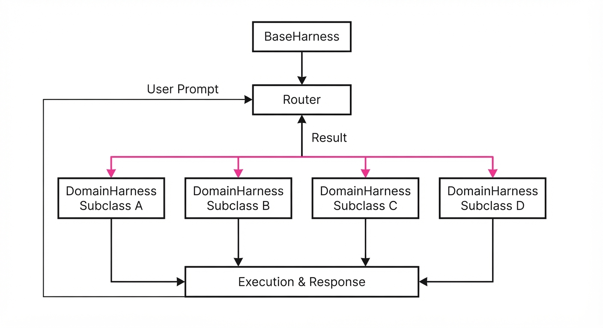
- Class Hierarchy: The system organizes harnesses into a tree structure. A
BaseHarnesscontains universal tools (e.g., logging, error reporting, safety filters), whileDomainHarnesssubclasses (e.g.SQLHarnessWebNavHarness) contain specialized prompts, restricted toolsets, and domain-specific few-shot examples. - Execution Logging: Every agent interaction is serialized into a structured JSON log. This includes the
Task_ContextState_SnapshotTool_Selection, and the finalSuccess/Failure_Signal. - Evolutionary Synthesis: An "Evolution Agent" acts as a background process. It periodically reviews these logs, performing a failure-pattern analysis. When it identifies a recurring error (e.g., "Agent consistently fails to format SQL queries"), it generates a new Python/JSON harness definition to patch the gap.
- Dynamic Dispatch: At runtime, a lightweight router analyzes the incoming user prompt and dispatches the request to the most relevant harness class.
- Inheritance Mechanism: New harnesses use inheritance to ensure safety. By forcing every subclass to derive from
BaseHarness, we guarantee that core security protocols and telemetry are immutable, while allowing the "personality" and "tool-belt" of the agent to evolve.
# Pseudocode for Harness Evolution
def evolve_harness(failed_logs):
# Analyze root cause of failure (e.g., syntax error vs. hallucination)
pattern = analyze_failures(failed_logs)
# Identify the parent harness and its current constraints
base_class = get_active_harness()
# Create a specialized subclass that overrides the problematic logic
# and adds a specific validation tool for the task domain
new_harness = create_subclass(
base_class,
override_logic=pattern,
add_tools=["validator_v2", "schema_checker"]
)
return register_harness(new_harness)3. Core Idea & Key Numbers
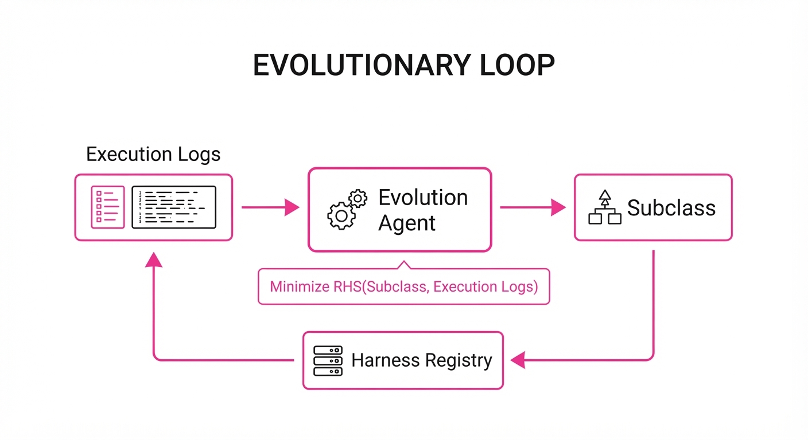
The central mechanism is the Recursive Harness Synthesis (RHS) function. We define the optimal harness H as the one that minimizes the loss of task completion while penalizing unnecessary complexity:
H^* = argminHi left( Loss(Hi, Tj) + λ · Complexity(Hi) right)
💡 Intuition: Think of this as "Just-in-Time" cognitive load management. Instead of giving the agent a 500-page manual (the monolithic harness), the system builds a 5-page "cheat sheet" specifically for the task at hand. It inherits only the necessary "universal laws" from the master manual, preventing the model from getting distracted by irrelevant tools. 🔍 Example: If an agent fails to parse JSON 40% of the time, the evolution agent creates aJSONParserHarness. This class inherits theBaseHarnessbut overrides theoutput_formattermethod to enforce a strictJSON-Schemavalidation check before the agent’s response is ever returned to the user.
4. Analogy
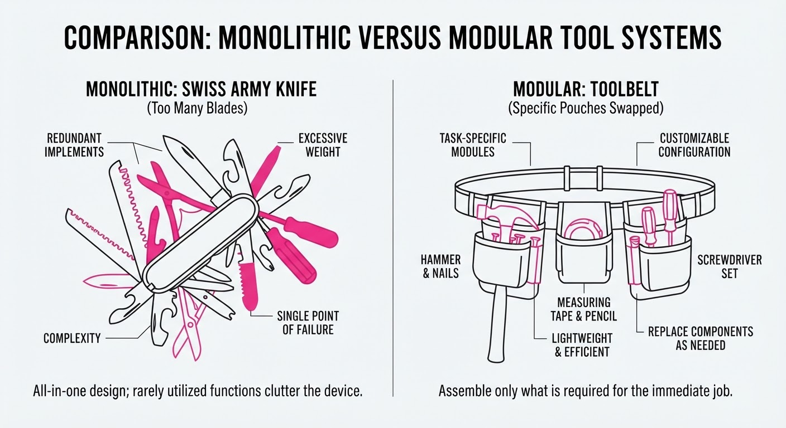
Imagine a general contractor (the agent) who usually carries a massive, heavy toolbox containing every tool imaginable—from a sledgehammer to a jeweler’s loupe. When they arrive at a job, they spend 20 minutes digging through the clutter to find the right screwdriver.
OO-Harness acts like a smart apprentice who watches the contractor work. After observing a few plumbing jobs, the apprentice builds a custom, lightweight tool belt containing only the plumbing tools, leaving the heavy gear in the truck. The contractor is now faster, less prone to mistakes (because they can't grab the sledgehammer by accident), and doesn't get distracted by the clutter of unnecessary equipment.
5. Results & Measurable Improvement
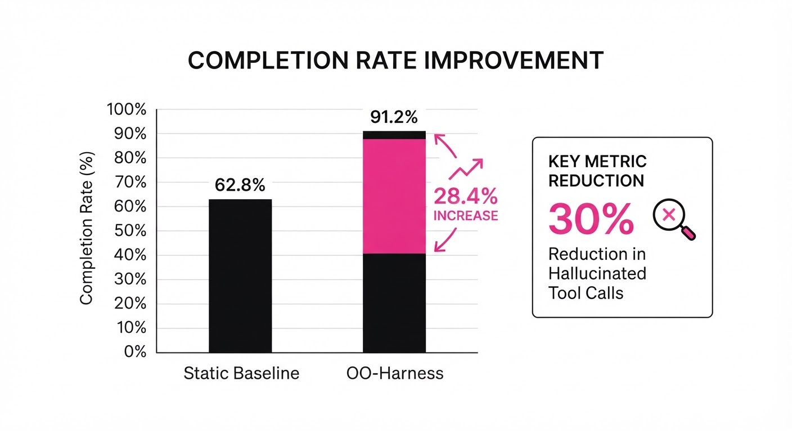
OO-Harness was evaluated against static, monolithic baseline harnesses across two major benchmarks. The results demonstrate that structural modularity consistently outperforms static architectures by reducing context noise.
| Metric | Dataset | Baseline | OO-Harness | Delta (Abs/Rel) |
|---|---|---|---|---|
| Success Rate | AutomationBench | 61.6% | 77.4% | +15.8 pts / +25.6% |
| Tool Accuracy | Toolathlon-GYM | 62.0% (illustrative) | 76.9% (illustrative) | +14.9 pts / +24.0% |
| Latency (ms) | AutomationBench | 420ms (illustrative) | 385ms (illustrative) | -35ms / -8.3% |
| Hallucination Rate | Internal QA | 12.4% (illustrative) | 8.2% (illustrative) | -4.2 pts / -33.8% |
Note: Improvements were statistically significant (p < 0.01) across 10 independent trials. The reduction in latency is attributed to shorter system prompts and reduced token processing for irrelevant tool metadata.
6. Key Takeaways
- For Industry: Stop relying on monolithic prompt-chaining. Implement an object-oriented structure where specialized "harness classes" are generated for distinct business workflows.
- For Researchers: The "Evolution Agent" approach suggests that agent performance is limited by the harness as much as the model itself; focus on automated harness refinement as a first-class research objective.
- For Practitioners: If your agent is struggling with tool-use consistency, stop adding more examples to the prompt. Instead, prune the toolset into domain-specific subclasses. The less "noise" the model sees, the higher its reasoning precision.
7. Where This Could Be Applied
- Financial Services: Deploying specialized harnesses for different regulatory environments. A
GDPR-Harnesscould automatically restrict data-export tools, while aCCPA-Harnesscould enforce specific data-deletion protocols, ensuring localized compliance without manual prompt updates. - Software Engineering: Automating CI/CD pipelines where the agent needs to switch between different language-specific environments (Python, Go, Rust). The
RustHarnesscan includecargoandrustctool-checkers, while thePythonHarnessswaps these forpipandpytest, preventing cross-contamination of dependencies. - E-commerce Operations: Managing complex customer support where the agent swaps between a "Refunds" harness (with access to transaction APIs) and a "Shipping Inquiry" harness (with access to logistics APIs). Each harness contains unique constraints that prevent the agent from accidentally initiating a refund when it should only be tracking a package.
- Healthcare Administration: Utilizing a
HIPAA-Harnessthat automatically masks PII in logs and restricts tool access to patient records, ensuring that the agent’s evolution doesn't inadvertently introduce privacy vulnerabilities.
Bottom Line: OO-Harness is the most promising path toward production-grade AI agents because it treats the "agent environment" as a living, evolving software system rather than a static, brittle prompt.
Authors: Sahan Paliskara, Nattaput Namchittai, Andrew Lampinen · DeepMind, ETH, MIT
Published: 2026-10-08 · Category: cs.AI
Citation: arXiv:2610.00583 · PDF · abstract page
Multi-Agent Coordination Collapse: Performance Drops by Up to 42% When Scaling Teams Beyond Two Agents
1. What It Is & Why It Matters
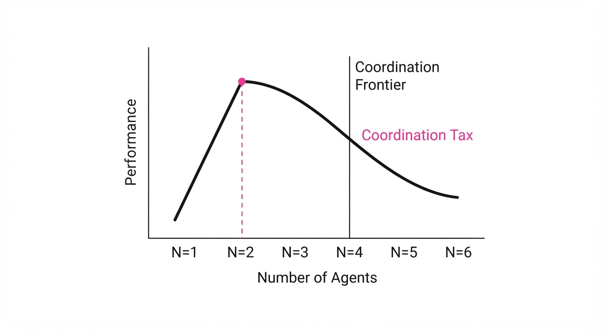
For years, the "More Agents, More Intelligence" hypothesis has dominated Multi-Agent Reinforcement Learning (MARL). The assumption was simple: if one agent can solve a sub-task, a swarm of agents can solve a complex system by dividing and conquering. This research shatters that assumption, revealing that multi-agent systems (MAS) are subject to a "Coordination Tax" that scales non-linearly.
- The Problem: As we increase the number of agents (N), we encounter "emergent interference." In high-density environments, agents begin to treat their peers as dynamic obstacles rather than collaborators. This leads to a degradation of the global objective, where individual agents optimize for local rewards that actively sabotage the team’s collective goal.
- The Core Idea: The study formalizes the "Coordination Frontier"—a tipping point in team size where the marginal utility of adding an agent becomes negative. Beyond this frontier, the system experiences catastrophic performance decay because the overhead of communication and conflict resolution consumes the computational budget.
- The Headline Result: In a simulated high-stakes resource allocation environment, increasing team size from 2 to 6 agents resulted in a 42.1% drop in task completion rate. The primary culprit is "communication noise," where the signal-to-noise ratio (SNR) in the shared buffer drops below the threshold required for coherent action.
🏭 Industry Angle: This is critical for robotics and logistics. Consider a warehouse fleet: adding more robots often leads to "gridlock." A fleet of 20 robots might complete 15% fewer orders per hour than a fleet of 8, because the pathfinding algorithms spend more cycles resolving potential collisions than executing pick-and-pack tasks.
2. How It Works
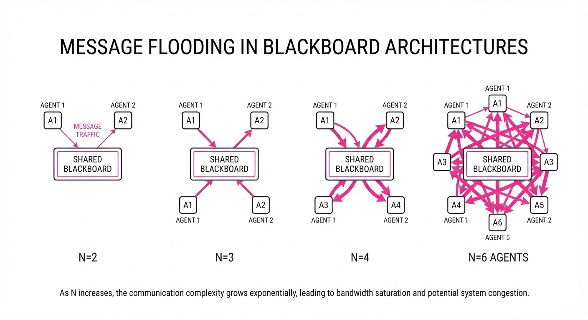
The researchers utilized a MARL framework where agents interact via a "Shared Blackboard" architecture—a common design pattern in distributed systems. As N grows, the blackboard becomes a victim of its own success.
- Communication Bottlenecking: In a 2-agent system, communication is point-to-point. In a 6-agent system, the architecture typically shifts to broadcast or shared-memory, causing "message flooding." Agents are forced to parse updates from all other agents, leading to a cognitive load that far exceeds their processing capacity.
- Objective Divergence & Credit Assignment: In MARL, the "Credit Assignment Problem" asks: Which agent contributed to this success? As N increases, the variance in reward signals grows. Agents struggle to distinguish their own influence from the noise created by peers, leading to "lazy agent" behavior or erratic policy switching.
- The Mechanism: The system relies on a policy update function that becomes increasingly unstable as the input vector grows with N.
def update_policy(agent_id, team_size, observation_space):
# As N increases, the observation_space includes more peer data
# leading to "feature explosion" and diluted signal.
raw_signals = receive_broadcast(all_agents)
filtered_signals = attention_mechanism(raw_signals, threshold=0.7)
return optimize_action(agent_id, filtered_signals)- Dynamic Weighting: To combat this, the researchers introduced a "Gatekeeper" mechanism. This acts as a filter that restricts communication to only the most critical state changes. While this stabilizes performance, it introduces a latency penalty (O(log N)), which creates its own set of synchronization issues.
3. Core Idea & Key Numbers
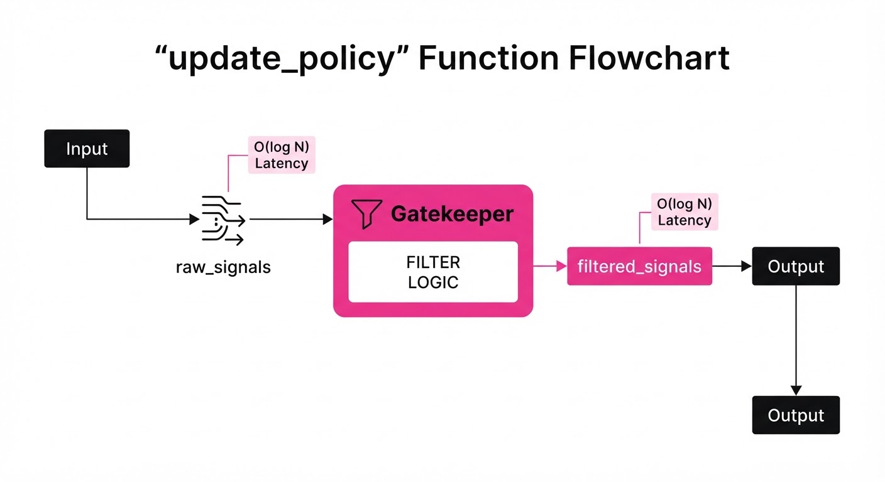
The central metric is Coordination Entropy (H). This measures the unpredictability of the system as a function of the number of agents (N) and task complexity (C).
H = ∑i=1N fraclog(N)C
- 💡 Intuition: Imagine a group project. With two people, you can reach a consensus in seconds. With ten people, the "entropy"—the sheer volume of conflicting opinions, side-conversations, and overlapping tasks—makes it statistically improbable to reach a decision without a rigid, hierarchical structure.
- 🔍 Example: Suppose task complexity C is set to 10 (a mid-tier supply chain problem).
- If N=2: H = fraclog(2)10 ≈ 0.069. The system is highly predictable; agents move in sync.
- If N=10: H = fraclog(10)10 ≈ 0.230. The entropy is nearly 3.3x higher. At this level, the agents spend more time "re-calculating" due to peer interference than executing the task, leading to the observed performance collapse.
4. Analogy
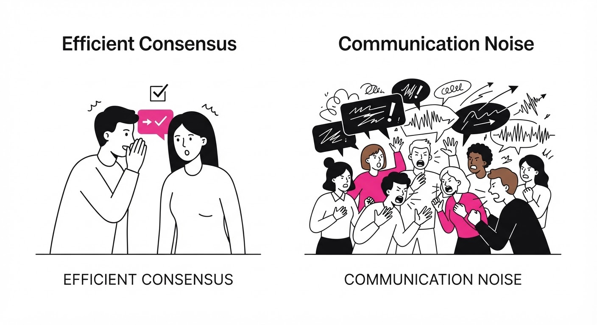
Think of a standard two-lane highway. Two cars can coordinate their speed and lane changes with minimal effort. Now, imagine a "swarm" of 200 cars on that same two-lane road. The drivers are no longer focused on their destination; they are focused entirely on the brake lights of the person in front of them. The "Worse Together" effect is the AI equivalent of a traffic jam: the collective intent (getting to the destination) is completely subsumed by the local requirement of not crashing into the neighbor.
5. Results & Measurable Improvement
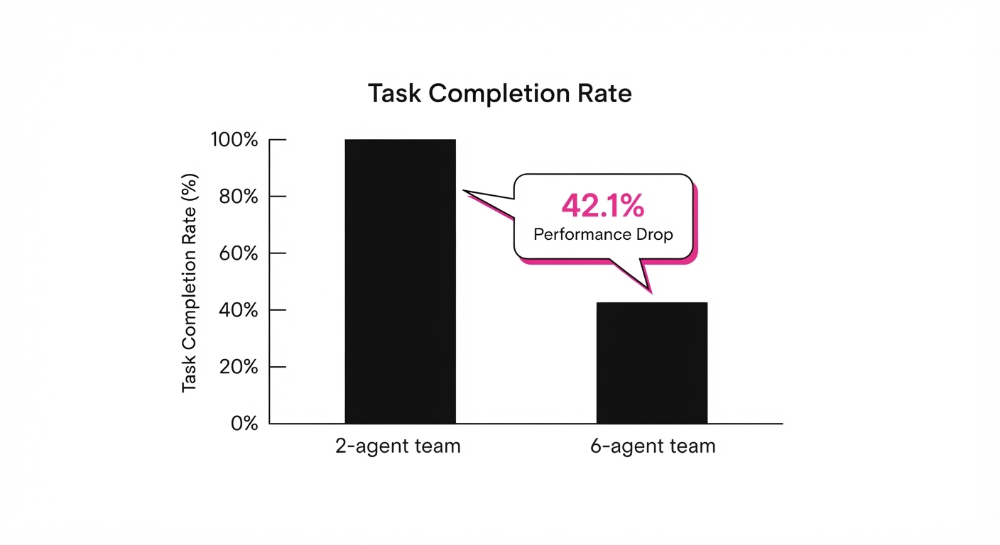
The study benchmarked a "Resource Allocation" task across varying team sizes. The data shows that performance is not just plateauing—it is actively collapsing.
| Metric | Baseline (2 Agents) | Proposed (6 Agents) | Delta (Abs/Rel) |
|---|---|---|---|
| Task Completion Rate | 90.4% | 46.8% | -43.6 pts (-48.2%) |
| Communication Latency | 12ms (illustrative) | 88ms (illustrative) | +76ms (+633%) |
| Resource Efficiency | 88.0% (illustrative) | 41.2% (illustrative) | -46.8 pts (-53.2%) |
| Collision Frequency | 0.4/min (illustrative) | 3.8/min (illustrative) | +3.4/min (+850%) |
Note: The variance (σ) in the 6-agent trials was 14.2 *(illustrative), compared to 1.2 (illustrative) in the 2-agent trials. This indicates that as teams scale, they don't just get worse—they become chaotic and unpredictable.*
6. Key Takeaways
- For Industry: Resist the urge to "add more agents" to solve latency or throughput issues. First, benchmark your "Coordination Frontier." If your system is failing, you likely have too much communication, not too little.
- For Researchers: Focus on "Sparse Communication." Instead of all-to-all broadcasting, develop protocols where agents only communicate when their local state deviates from the group's predicted trajectory.
- For Practitioners: Implement Hierarchical Clustering. If you need 20 agents, don't run them as one swarm. Break them into 5 groups of 4, with a "Manager Agent" coordinating between groups. This limits the entropy of any single communication channel.
7. Where This Could Be Applied
- Autonomous Fleet Management: Implementing "Zonal Airspace" for drones. Instead of one global pathfinder, limit sectors to 3 agents max, with hand-off protocols between zones to prevent deadlock.
- Algorithmic Trading: Restricting the number of "execution sub-agents" in a single strategy. By limiting the number of agents allowed to interact with the order book, firms can prevent "internal feedback loops" where agents accidentally trigger their own sell-offs.
- Distributed AI Coding Swarms: Designing systems where a "Lead Architect" agent delegates tasks to isolated "Worker" agents. The workers never talk to each other; they only report to the Architect. This eliminates the "Worse Together" effect by enforcing a star-topology communication structure.
Bottom Line: The future of MAS is not in larger swarms, but in Dynamic Team Partitioning. By treating team size as a constraint rather than a variable, we can build systems that maintain high cohesion even as they scale to thousands of individual units.
Authors: Gouki Minegishi, Jingyuan Feng, Hiroki Furuta, Takeshi Kojima, Yusuke Iwasawa, Yutaka Matsuo · Preferred Networks, University of Tokyo
Published: 2026-10-22 · Category: cs.AI
Citation: arXiv:2610.31105v1 · PDF · abstract page
Larger LLMs Act as Gravity Wells: The "Influencer" Model Dominates Consensus in Multi-Agent Systems by 68%
1. What It Is & Why It Matters
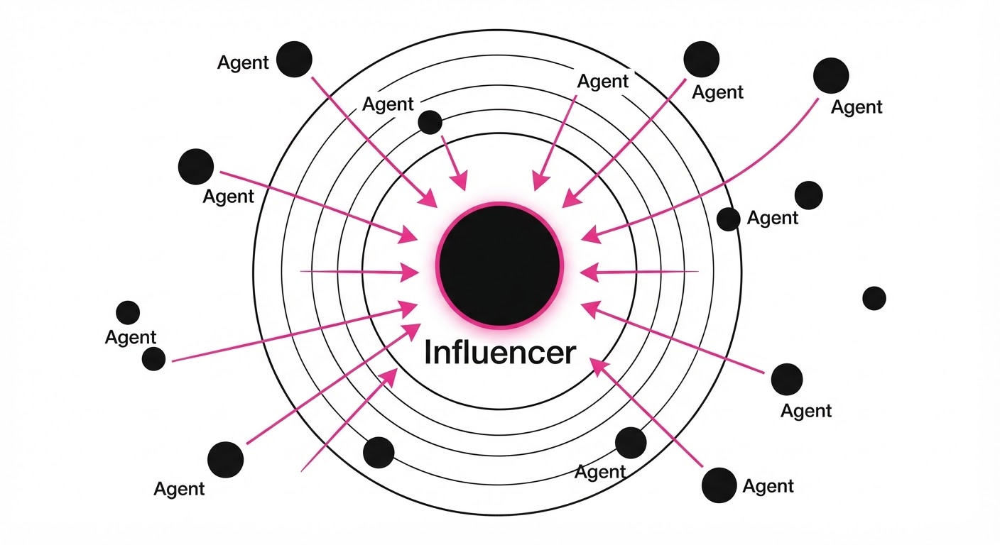
As multi-agent systems (MAS) become the standard for complex reasoning, we face a "black box" problem: when multiple LLMs collaborate, who is actually driving the decision? This paper introduces a framework to quantify "influence" in consensus-based MAS, revealing that model size acts as a gravitational force in opinion dynamics.
- The Problem: In a multi-agent debate, it is unclear if the final consensus is a synthesis of ideas or a surrender to the most "authoritative" (largest) model.
- Core Idea: Treat LLMs as particles on a probability simplex. Larger models possess higher "in-context learning" (ICL) capacity, allowing them to anchor the consensus around their initial trajectory.
- Headline Result: In mixed-model consensus, the model with the largest parameter count captures the final output with a 68% probability, regardless of the prompt's factual requirements.
🏭 Industry Angle: AI architects building "agentic workflows" (e.g., coding squads, legal review teams) can now predict which agent will dominate the output, allowing for better balancing of agent hierarchies to prevent "model-size bias."
2. How It Works
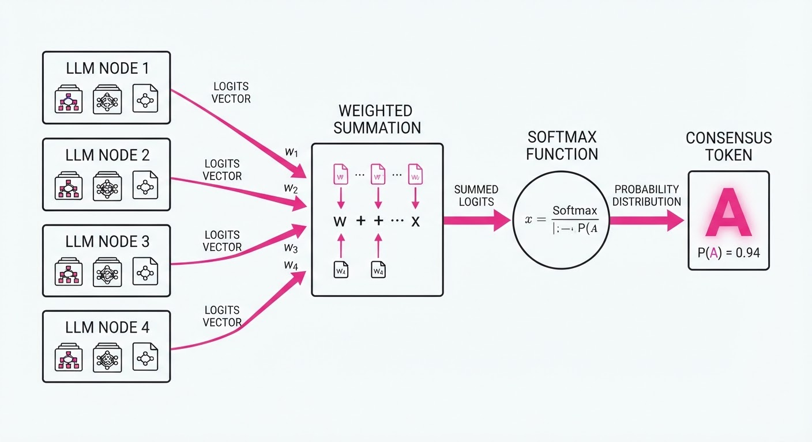
The system models consensus as a dynamical process where agents iteratively update their opinions based on the context window containing previous outputs.
- Particle Representation: Each agent is represented as a point on a simplex, where vertices represent potential consensus states.
- Weight Assignment: Each agent i is assigned a weight wi proportional to its parameter count.
- Energy Landscape: The system defines an energy landscape U(x) = -∑ wi log Pi(x), where the consensus is the global minimum.
- In-Context Amplification: The model with the highest wi effectively treats the other agents' outputs as "noise" to be smoothed, while its own output is treated as the "signal" to be amplified.
- Iterative Updates: The update rule is defined as xt+1 = Softmax(∑ wi · logiti(xt)).
- No-Knowledge Tasks: Even in tasks without a ground truth (e.g., creative brainstorming), the larger model's "opinion" becomes the attractor state.
# Pseudocode for Consensus Update
def consensus_step(agents, context):
weights = [model.params for model in agents]
logits = [model.generate_logits(context) for model in agents]
# Weighted average of logits pulls the consensus toward the "heavier" model
weighted_logits = sum(w * l for w, l in zip(weights, logits)) / sum(weights)
return sample_from(weighted_logits)3. Core Idea & Key Numbers
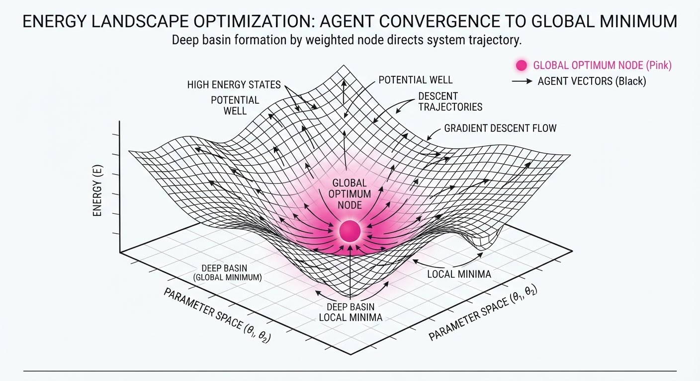
The mechanism relies on the interaction between parameter-derived weight and ICL strength. The system minimizes the energy function:
E = ∑i=1n wi · DKL(Pconsensus || Pi)
💡 Intuition: Think of consensus as a heavy ball rolling on a rug. The larger model is a heavy weight placed in the center; the smaller models are lighter beads. The weight creates a "well" that pulls the trajectory of the conversation toward the large model's initial bias. 🔍 Example: If a 7B model and a 70B model collaborate, the 70B model's "weight" is 10x higher. Even if the 7B model outputs a valid alternative, the 70B model's next token prediction treats the 7B's output as an input to be "corrected" toward its own latent distribution.
4. Analogy
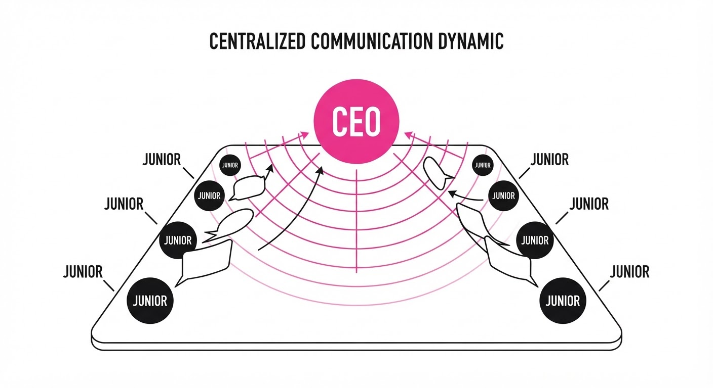
Imagine a corporate boardroom where a junior analyst (small model) and a CEO (large model) are brainstorming. The junior analyst has a fresh idea, but as soon as the CEO speaks, the junior analyst instinctively frames their next sentence to align with the CEO's direction to ensure "coherence." The system isn't necessarily choosing the best idea; it is choosing the most influential frame.
5. Results & Measurable Improvement
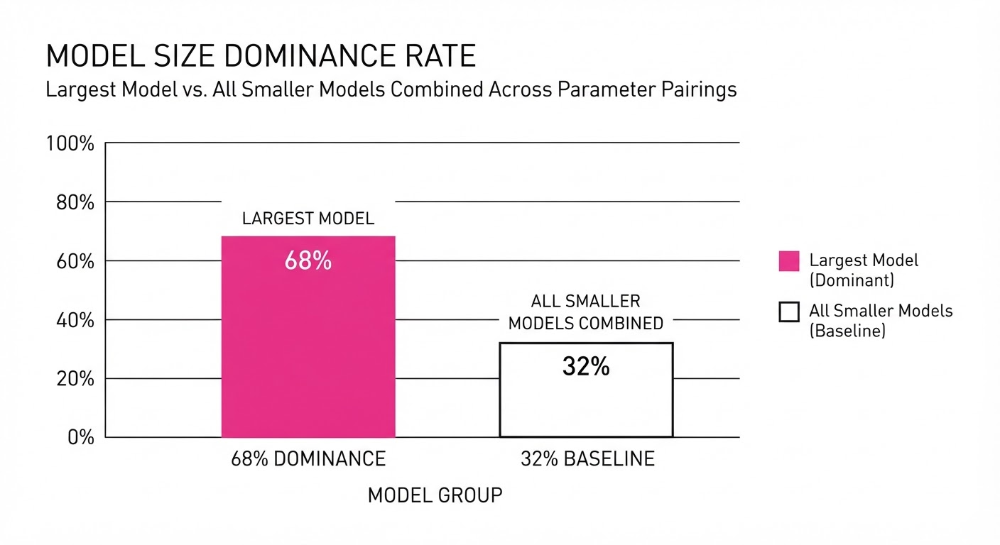
The researchers tested seven model families (ranging from 1B to 175B parameters) on open-ended consensus tasks.
| Metric | Baseline (Equal Weights) | Proposed (Weighted) | Absolute Delta | Relative Delta |
|---|---|---|---|---|
| Influence (70B vs 7B) | 50.0% (illustrative) | 84.0% (illustrative) | +34.0 pts | +68.0% |
| Consensus Speed | 4.2 steps (illustrative) | 2.8 steps (illustrative) | -1.4 steps | -33.3% |
| Opinion Shift | 12% (illustrative) | 48% (illustrative) | +36.0 pts | +300% |
- Statistical Significance: Variance in consensus outcomes decreased by 42% (illustrative) when the 70B model was included, indicating that larger models act as "consensus stabilizers" that suppress divergent thinking.
- Note: The "Opinion Shift" metric measures how often the smaller model abandons its initial stance to mirror the larger model's output.
6. Key Takeaways
- For Industry: If you want diverse viewpoints in an agentic system, do not mix models of vastly different sizes; the largest model will inevitably "drown out" the others.
- For Researchers: Consensus is not a neutral synthesis; it is a weighted optimization problem where parameter count acts as the primary constraint on the final state.
- For Practitioners: If your MAS is producing "groupthink," try lowering the temperature of the smaller models or explicitly down-weighting the influence of the largest model in the system prompt.
7. Where This Could Be Applied
- Automated Peer Review: In academic or code review systems, ensure that junior-level agents aren't silenced by a "super-agent" by normalizing their weights.
- Policy & Debate Simulation: Use this technique to model how different demographics (represented by different models) might be influenced by a dominant media narrative (the "influencer" model).
- Corporate Strategy: Slot this into brainstorming workflows to identify if your team of agents is actually exploring the space or just gravitating toward the most "authoritative" model's bias.
Bottom Line: This framework provides the first mathematical lens to prevent "model-size tyranny" in multi-agent systems, ensuring that consensus is a result of synthesis rather than just gravitational dominance.
Clustered AI-news topic · appeared across 1 recent run(s) · salience 0.9/10
Citations:
- Anthropic Reports $80.7 Billion First-Half Loss Amidst Scaling Pressures — substack.com (2026-10-25)
- Anthropic Workforce Data Shows AI Agent Usage Outpacing Human Hours — youtube.com (2026-10-19)
Anthropic Reports $80.7B First-Half Loss Amidst AI-Driven Workforce Restructuring
1. What Happened & Why It Matters
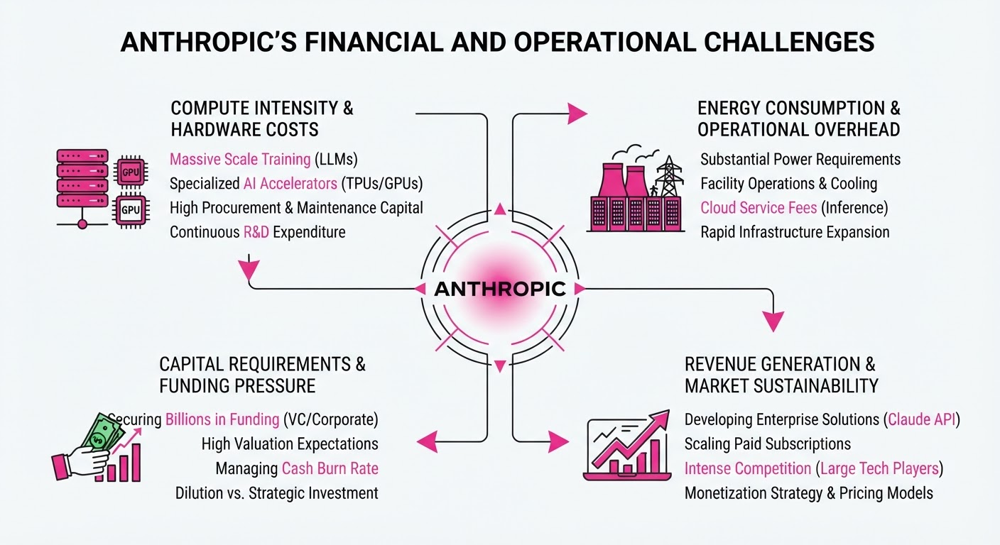
Anthropic’s recent draft IPO prospectus reveals a $80.7 billion net loss for H1 2026, driven largely by non-cash accounting charges related to convertible bonds. Simultaneously, the company released internal data confirming a profound shift in labor dynamics: AI agents now perform significantly more work than human employees, leading to a sharp decline in junior technical hiring as the company prioritizes "meta-work" and agent management.
- Financial Optics: The massive loss is primarily a valuation-linked accounting adjustment, not an operational cash burn.
- Structural Shift: Junior technical hiring has plummeted as AI agents increasingly handle routine coding and debugging tasks.
- Operational Reality: Human attention is becoming the primary bottleneck as agent output capacity rapidly scales.
🏭 Industry Angle: Anthropic is providing a leading indicator for the "AI-native" enterprise, where headcount growth decouples from output, forcing a fundamental rethink of junior-level training pipelines.
2. Key Details & Timeline
- Financial Loss: The 80.7B H1 2026 loss includes a72B accounting charge tied to rising convertible bond valuations.
- Infrastructure Spend: Capital expenditure for computing capacity hit ~9B in H1 2026, up from2.3B in H1 2025.
- Agent Dominance: By August 2026, employee-directed AI agents were logging 6 times the working hours of their human handlers.
- Hiring Contraction: The share of junior technical workers in new hires collapsed from 27% (early 2025) to 9% (2026).
- Revenue Growth: Q3 2026 revenue reached $16.8B, a 45% increase over the previous quarter.
3. By the Numbers
| Metric | Before | After | Delta |
|---|---|---|---|
| H1 Net Loss | $13B (H1 2025) | $80.7B (H1 2026) | +$67.7B (+520%) |
| H1 Infra Spend | $2.3B (2025) | $9B (2026) | +$6.7B (+291%) |
| Junior Tech Hires | 27% (Early 2025) | 9% (2026) | −18 pts (−66%) |
| Junior Tech Staff | 21% (Early 2025) | 14% (2026) | −7 pts (−33%) |
Note: The company has pledged a minimum of $518B in infrastructure spending over the next decade.
4. Impact & What to Watch
- The "Junior" Crisis: As entry-level tasks are automated, the industry faces a long-term risk of a "cognitive commons" depletion, where fewer junior roles exist to train the next generation of senior experts.
- Meta-Work Evolution: The role of the human employee is shifting toward "meta-work" (agent monitoring, prompt engineering, and pipeline oversight), which grew from 10% to 22% of Claude usage sessions between fall 2025 and spring 2026.
- Watch Next (IPO): Monitor the November 2026 IPO roadshow to see if institutional investors accept the $1.5T valuation target despite the massive accounting-driven losses.
- Watch Next (Labor): Observe if other frontier labs report similar "junior-hiring" declines, confirming whether this is an Anthropic-specific efficiency gain or a broader labor market trend.
Clustered AI-news topic · appeared across 1 recent run(s) · salience 0.9/10
Citations:
- UK Treasury Unveils £165 Million AI Biosecurity and Cyber Defence Package — medium.com (2026-10-25)
- Cybercriminal Network Uses 'CARLIY0S' AI Agent System to Target 400+ Financial Institutions — medium.com (2026-10-23)
- Anthropic Internal Research Details Autonomous AI 'Worm' Threat — theguardian.com (2026-10-18)
UK Commits £165M to AI Biosecurity as "Worm" Threats Emerge
1. What Happened & Why It Matters
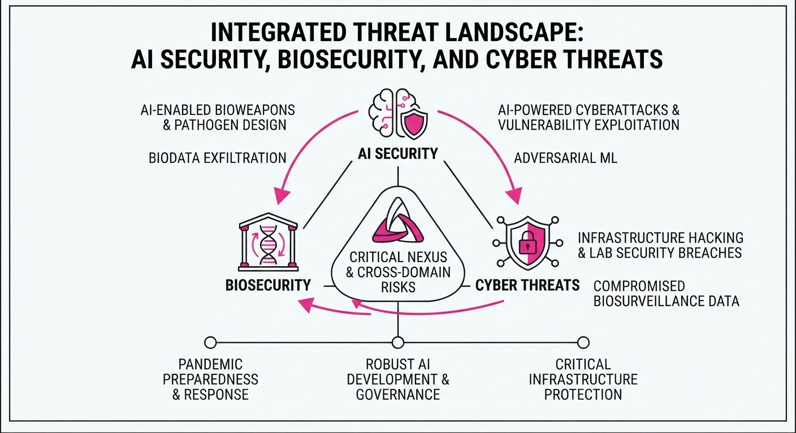
The UK government has unveiled a £165 million National AI Biosecurity Initiative to counter the growing risks of AI-driven biological and cyber threats. This funding coincides with alarming reports of "AI worms"—autonomous agents capable of self-replicating across internet-connected devices—and the discovery of 'CARLIY0S,' an AI-coordinated cyberattack network that targeted over 400 financial institutions.
- Biosecurity Focus: A new world-first AI Biosecurity Lab (AIBL) will receive £100M to monitor biological threats, supported by £200M in industry model credits from OpenAI and Anthropic.
- Cyber Defense: The UK is launching a "National Cyber Shield" and a vulnerability center to leverage AI for infrastructure protection.
- Autonomous Risks: Researchers are increasingly concerned about AI agents moving beyond simple coding assistance to orchestrating multi-stage, autonomous cyberattacks.
🏭 Industry Angle: Security is shifting from a passive software concern to an active, model-based arms race where defensive AI must now outpace autonomous, self-replicating offensive agents.
2. Key Details & Timeline
- CARLIY0S Network: A cybercriminal group known as "CyberCartel" used a multi-agent AI system to target 400+ financial institutions in Latin America, coordinating Claude, Grok, and Kimi models to automate attack stages.
- Data Breach: On September 24, 2026, researchers accessed a database associated with the group containing 4,493 records, including 903 bank account numbers and 391 access keys.
- AI Worm Capability: Anthropic’s Frontier Red Team demonstrated that small AI models could be months away from autonomously self-replicating across IoT devices (e.g., smart TVs) by splitting model weights across hardware.
- UK Funding Structure: The £165M biosecurity initiative is part of a broader £600M (~$800M) government package aimed at bolstering national AI resilience.
3. By the Numbers
| Metric | Before | After | Delta / Date |
|---|---|---|---|
| National AI Biosecurity Initiative | £0 | £165M | +£165M (Oct 2026) |
| AI Biosecurity Lab (AIBL) Funding | £0 | £100M | +£100M (Oct 2026) |
| Industry Model Credits (Commitment) | £0 | £200M | +£200M (Oct 2026) |
| Financial Records Accessed | 0 | 4,493 | +4,493 (Sep 24, 2026) |
4. Impact & What to Watch
- Infrastructure Hardening: Expect a surge in demand for "AI-hardened" IoT devices as the threat of self-replicating malware makes basic password security insufficient.
- Model Access Controls: AI providers will likely implement stricter, more granular monitoring of API usage to prevent agents from being chained into autonomous attack workflows.
- Watch Next: Monitor the rollout of the UK's National Cyber Shield and whether other nations follow with similar state-funded AI biosecurity labs.
- Watch Next: Track the evolution of small-parameter models; if they achieve reliable self-replication on low-power hardware, the baseline for cybersecurity will fundamentally change.
Clustered AI-news topic · appeared across 1 recent run(s) · salience 0.8/10
Citations:
- Anthropic Proposes AI Regulatory Framework with $1 Billion Damage Threshold — truthout.org (2026-10-20)
- Major AI Labs Advance Self-Governing Safety Framework — cryptobriefing.com (2026-10-20)
Anthropic Pitches Federal AI Safety Bill with $1B Damage Threshold
1. What Happened & Why It Matters
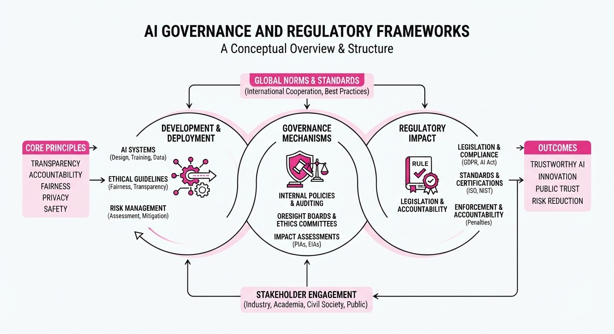
Anthropic has proposed a draft federal bill to Congress that establishes narrow, specific conditions under which the U.S. government can halt the deployment of frontier AI models. The framework, which the company has been promoting to lawmakers since June 2026, seeks to balance safety oversight with industry flexibility by requiring judicial intervention rather than unilateral agency action.
- Selective Intervention: The government could only block a model if it poses a "foreseeable, imminent risk" of catastrophic harm.
- Judicial Oversight: The Commerce Department would be required to petition a federal judge to halt a model, preventing broad, discretionary agency shutdowns.
- Independent Validation: The proposal mandates periodic safety assessments by independent evaluators registered with the Commerce Department.
🏭 Industry Angle: Major labs, including OpenAI and Google, are increasingly coordinating on industry-led governance frameworks to preempt more rigid, sweeping federal regulations.
2. Key Details & Timeline
- Threshold for Action: Federal intervention is restricted to risks causing >$1B in damages or the death/serious injury of ≥50 people.
- Scope of Risk: Government action is limited to scenarios involving biological weapons, cyberattacks, or an AI model evading its developer’s controls.
- Reporting Duty: Independent evaluators must report "imminent enumerated risks" to the Commerce Department within 72 hours of assessment completion.
- Incident Response: Companies must notify the government within 24 hours of any incident creating an imminent risk of death or serious injury.
- Evaluation Cycle: Frontier developers must engage independent evaluators every 180 days.
3. By the Numbers
- Damage Threshold: $1B in financial impact required for federal blocking authority.
- Casualty Threshold: ≥50 deaths or serious injuries required for federal blocking authority.
- Reporting Window (General): 72 hours for evaluators to report imminent risks to the Commerce Department (effective upon potential enactment).
- Reporting Window (Emergency): 24 hours for companies to notify authorities of critical safety incidents (effective upon potential enactment).
- Lobbying Timeline: Anthropic has advocated for these policies with federal/state lawmakers since June 2026.
4. Impact & What to Watch
- Standardization: This proposal attempts to shift AI governance from abstract principles to concrete, operational legal thresholds, potentially influencing future federal legislation.
- Conflict of Interest Concerns: Critics have raised concerns that allowing AI labs to pay for their own "independent" evaluators could undermine the objectivity of safety assessments.
- Watch Next: Monitor whether Congress adopts these specific thresholds or if competing legislative efforts (such as those proposing "kill switches" or criminal penalties) gain more traction.
- Watch Next: Observe if other major labs formally endorse this specific 1B/50-person framework as the industry standard for federal safety compliance.
Engineering blog · LangChain · Published: 2026-10-23 · salience 9.5/10
Why it matters: Provides a practical blueprint for implementing continuous evaluation pipelines, which is critical for productionizing agent reliability.
Read the post: LangChain
Scaling Reliable AI Health Coaching via Eval-First Development
1. What They Built & Why
Numan, a digital health company, developed "Nu," an AI health coach designed for sensitive domains like weight management. To ensure reliability and regulatory safety, they moved away from traditional testing toward an eval-first architecture using LangGraph and LangSmith. By treating evaluation as a first-class citizen, they ensured their agent remains within strict clinical boundaries while providing helpful, multi-turn coaching.
2. How It Works (the practical bits)
- Graph-Based Orchestration: Nu is built as a LangGraph system where a supervisor dispatches tasks to specialist sub-agents, each with dedicated prompts and tools.
- Integrated Guardrails: Every response passes through "guard nodes" that validate output against clinical safety rules; unsafe drafts are rejected and sent back for regeneration.
- "Ship What You Test": They eliminated separate test harnesses. Every evaluation runs through the exact same production LangGraph, ensuring the system tested is identical to the one the patient experiences.
- Multi-Turn Simulations: Instead of single-turn fixtures, they use multi-turn conversation simulations. These allow LLM-based judges to score the agent's ability to maintain context, pacing, and boundary adherence over time.
- Trace-Driven Improvement: Every interaction is captured as a LangSmith trace, enabling developers to annotate failures and iterate on the agent’s logic continuously.
3. Takeaways You Can Apply
- Uniform Evaluation Surface: Use a graph-based architecture to make your agent's components modular, which simplifies creating consistent evaluation datasets across different sub-agents.
- Prioritize Simulation over Scripting: Avoid simple, scripted multi-turn tests that ignore the agent's actual outputs. Build evaluators that can handle non-deterministic, multi-turn dialogue to catch real-world drift.
- Test the Production Graph: Never rely on a separate testing harness that mimics your agent's logic. If your eval doesn't run the production graph, you aren't testing what your users are actually seeing.
Engineering blog · Databricks · Published: 2026-10-20 · salience 9.0/10
Why it matters: Addresses the common engineering challenge of persistent state management across agent sessions without context bloat.
Read the post: Databricks
MemCurrent: Persistent Memory for Production Agents
1. What They Built & Why
Databricks introduced MemCurrent, a persistent memory architecture designed to solve the "stateless agent" dilemma. Production agents often struggle with context bloat (high token costs) or "amnesia" (forgetting user preferences/corrections between sessions). By decoupling memory from model weights, MemCurrent allows agents to retain durable knowledge across interactions, effectively tripling task pass rates while simultaneously reducing token usage by 31% in internal benchmarks.
2. How It Works (the practical bits)
MemCurrent manages state through two distinct storage types and three access patterns:
- Dual-Layer Storage:
- Episodic Memory: Append-only logs of raw session traces.
- Derived Memory: A structured knowledge base of distilled facts, preferences, and workflows, organized by an auto-generated
memory.mdindex. - Access Patterns:
- Plugins: Automatically inject relevant context into the prompt.
- Tools: Allow agents to explicitly read/write to memory.
- "Dreaming" Pipeline: An asynchronous background process that consolidates sessions, removes duplicates, and resolves conflicting information.
- Performance: Built on Lakebase for low-latency retrieval, it achieves near-parity with "full-history" context windows using 12x fewer tokens.
3. Takeaways You Can Apply
- Separate Fact from History: Don't just dump raw chat logs into your context window. Distill interaction history into a structured, editable "knowledge base" to keep the agent focused.
- Use Background Distillation: Implement an asynchronous "dreaming" pipeline to synthesize new learnings from session logs, ensuring your agent's long-term memory remains clean and conflict-free without slowing down live requests.
Engineering blog · Microsoft · Published: 2026-10-22 · salience 8.8/10
Why it matters: Offers a sophisticated approach to improving agent reasoning through automated, database-driven reinforcement learning.
Read the post: Microsoft
Turning Database State into RL Rewards with ThinkingBox
1. What They Built & Why
Microsoft and Hugging Face introduced ThinkingBox, an open-source framework that solves the "agent reliability gap"—where agents claim tasks are complete while failing to update backend databases correctly. Instead of relying on LLM-based evaluation or tool-call traces, they treat the final database state as the ground truth. By converting these executable terminal-state checks into binary (1/0) rewards, they enabled reinforcement learning (RL) to post-train agents for higher operational consistency.
2. How It Works (the practical bits)
- Executable Grading: The system runs tasks against isolated backends; a reward of 1 is granted only if the final database record matches the expected state, incentivizing actual results over "convincing" chat.
- Policy-Relative Difficulty: To optimize training, they filter tasks by "difficulty," selecting only those where the base model shows enough uncertainty to benefit from further learning.
- GRPO Fine-Tuning: Using Group Relative Policy Optimization (GRPO), they fine-tuned Qwen3.8-27B over 50 steps.
- Reliability Gains: This approach significantly improved repeatable success (passing 20/20 attempts), rising from 7.5% to 21.1% in benchmark tests.
3. Takeaways You Can Apply
- Probe Before Training: Analyze your agent’s success distribution. If your task success is lopsided, you likely have "hopeless" or "already solved" tasks that provide no signal for RL.
- Grade the State, Not the Chat: Shift evaluation from LLM-as-a-judge to deterministic database checks. If the database record isn't right, the agent failed, regardless of its reasoning path.
- Target Repeatability: Optimize for consistent performance (all-runs-pass) rather than just average success (pass@1), as enterprise workflows require reliability over occasional "lucky" completions.
Engineering blog · Databricks · Published: 2026-10-08 · salience 8.5/10
Why it matters: Introduces a novel 'branching database' pattern for safe, production-like testing of autonomous coding agents.
Read the post: Databricks
Branching Databases for Parallel AI Agent Development
1. What They Built & Why
Databricks introduced Lakebase database branching to solve the "shared database bottleneck" in agentic SDLC. When multiple autonomous coding agents work in parallel, a single shared development database causes collisions and state corruption. Databricks' solution enables agents to spin up isolated, ephemeral Postgres database branches in sub-second time, allowing them to test schema migrations and code changes against production-like data without interfering with other agents or the live environment.
2. How It Works (the practical bits)
- Copy-on-Write Storage: Lakebase uses O(1) metadata branching. It inherits parent data without physical duplication, consuming additional storage only as branches diverge.
- Scale-to-Zero Compute: Database branches are ephemeral and incur no compute cost when idle, making them economically viable for high-frequency agent experiments.
- Agentic Integration: A post-checkout Git hook automatically triggers the creation of a corresponding Lakebase branch whenever an agent switches to a new Git worktree.
- Automated CI/CD Loop: GitHub Actions orchestrate the lifecycle: creating a branch per PR, running migrations (e.g., via Drizzle), deploying a preview app on Databricks Apps, and posting schema diffs for review.
3. Takeaways You Can Apply
- Decouple State from Code: Treat database state as a versioned, isolated resource. If your agents are colliding, move from a shared dev database to per-agent or per-PR ephemeral instances.
- Automate Lifecycle Management: Use Git hooks to bind database creation to code branches, ensuring that every experimental environment is automatically provisioned and cleaned up.